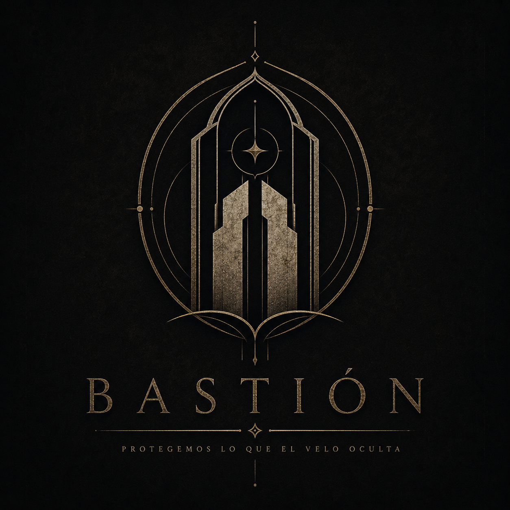

Organización · Lunaterra
Bastión
Custodes Propugnaculi
Antigua organización dedicada a vigilar las brechas, contener aquello que las atraviesa y proteger a quienes jamás llegarán a saber lo cerca que estuvieron del peligro.
- Nombre
- Bastión
- Nombre antiguo
- Custodes Propugnaculi
- Tipo
- Organización independiente de Guardianes
- Fundación
- Información pendiente
- Fundadores
- Información pendiente
- Sede
- Bastión
- Estado
- Activa

Bastión, los Guardianes de Bastión (Custodes Propugnaculi en lengua antigua) es una organización que probablemente haya existido mucho antes de lo que podáis imaginar.
Durante siglos, su existencia permaneció oculta para la mayoría de los habitantes de Lunaterra. No porque Bastión no estuviera presente, sino porque aquellos que formaban parte de ella aprendieron muy pronto que algunas verdades debían permanecer lejos de los ojos de quienes todavía no estaban preparados para conocerlas.
Bastión nació cuando las competencias insanas comenzaron a aparecer con una frecuencia que ya no podía ser ignorada. Lo que durante generaciones había sido considerado mito empezó a manifestarse ante los ojos de los hombres: personas capaces de hacer aquello que las leyes de la naturaleza no permitían. Pero aquello no fue lo único que despertó.
Los Custodios del Origen —Custodes Originis— ya estaban allí.
Poco antes de que Bastión levantara sus muros, los Custodios habían comenzado a investigar aquello que se encontraba más allá de lo conocido. Su propósito, al menos en los primeros registros, parecía ser la comprensión y conservación de aquello que había dado origen a las anomalías que comenzaban a aparecer.
Con el tiempo, sin embargo, sus investigaciones dejaron de distinguir entre aquello que debía ser comprendido y aquello que jamás debía ser tocado.
Los límites comenzaron a desaparecer.
Personas, criaturas, recuerdos y fuerzas desconocidas fueron utilizados en experimentos cuyo verdadero propósito permanece oculto incluso para algunos de los archivos más antiguos de Bastión. Lo que los Custodios consideraban conocimiento, otros comenzaron a considerarlo una amenaza.
Fue entonces cuando aparecieron los primeros Guardianes. Bastión no nació para descubrir la verdad, nació para impedir que determinadas verdades llegaran a manos equivocadas y desde entonces, generaciones enteras de Guardianes han dedicado su vida a vigilar las brechas, investigar las manifestaciones sobrenaturales, contener aquello que las atraviesa y proteger a aquellos que jamás llegarán a saber lo cerca que estuvieron del peligro.
Pero Bastión también guarda secretos, quizá más de los que está dispuesto a admitir. Sus archivos contienen documentos anteriores incluso a la fundación oficial de la organización. Algunos están escritos en lenguas que nadie habla. Otros describen acontecimientos que, según la historia conocida, todavía no habían ocurrido cuando fueron redactados.
Y hay documentos que terminan siempre de la misma manera:
«No abrir. No investigar. No recordar.»
Nadie sabe quién escribió esas palabras por primera vez.
Pero todos los Guardianes aprenden desde el momento en que entran en Bastión que existen tres cosas que jamás deben tomarse a la ligera:
Una brecha abierta.
Un poder que nadie comprende.
Y una verdad que alguien se ha esforzado demasiado en ocultar.